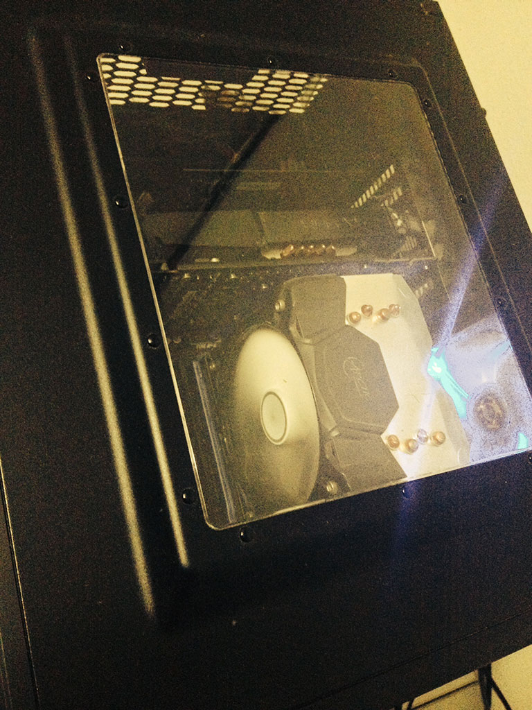

I recently upgraded my PC with another SSD and a pair of RAMs. Until last week I was still using 4GB DDR3 RAMs on my PC.
Added an extra 8GB DDR3 and at least I can say know that I’m up to date with most enthusiasts. Somewhat.
The new SSD is because I wanted to start from scratch, I bought a copy of Windows 8.1 Pro and I upgraded from Windows 7 32 bit to Windows 8.1 64bit.
The process of reinstalling certain apps due to the 64 bit compatibility wasn’t that tedious as most of the apps I use are portable.
I’m finding Windows 8.1 to be quite nice, the Metro UI I can understand why some people love it and why most people hate it.
I’m more of a traditionalist when it comes to desktop PCs, so I installed ClassicShell which returned the start menu in all it’s glory.
It’s not much of an upgrade, but with the extra juice and faster read speeds, I’ll find a way to push it somehow, albeit with games or 3D Modeling which I”m slowly getting into as a hobby right now.
 Moi Rig